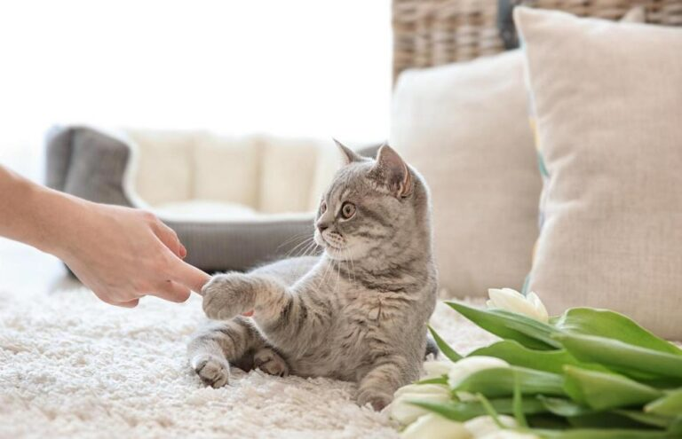
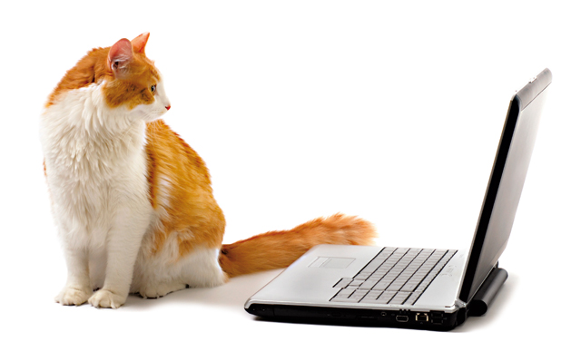

Selecione o conteudo que deseja ler no menu acima

Taxonomia
Taxonomy is the science of classifying organisms. In this section, we explore the classification of felines.
Anatomia
Anatomy focuses on the structure of feline bodies, detailing their unique physical characteristics.

Comportamento
Behavior studies explore how felines interact with their environment and each other.

Saúde
Health-related topics include common feline diseases, their prevention, and care.
Ciência
Scientific advances in understanding felines are covered in this section.

Psicologia
The psychology of felines is explored, focusing on their cognition and emotions.
Sustentabilidade
Sustainability and its impact on feline habitats are discussed in detail.

Tecnologia
Technology's role in studying and protecting felines is highlighted in this section.
Futuro
The future of felines in a changing world is explored here.